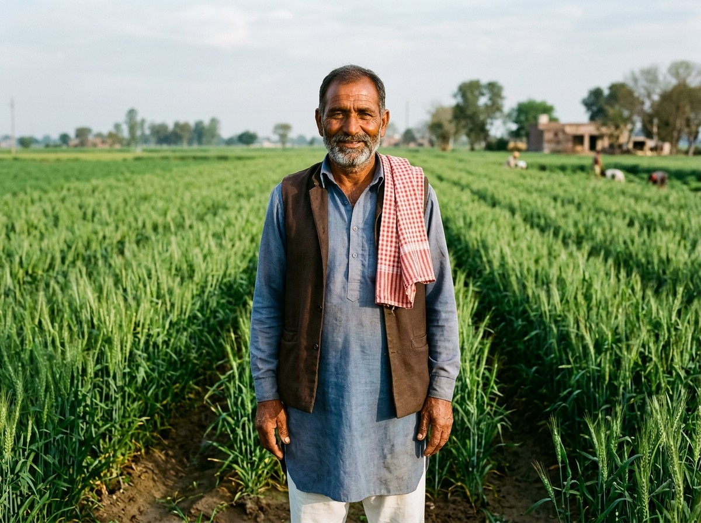

Smart crop and market guidance built for Indian farmers.
Make informed farming decisions with soil-specific crop suitability, live mandi prices, and local weather insights grounded in agricultural science.

Agri Mitra combines regional agronomic thresholds, verified soil test baselines, and official market records.
Standard nutrient (NPK), pH, and temperature tolerance thresholds for Indian crops.
District-wise soil classification and nutrient baselines from DAC&FW.
Real-time local temperature, humidity, and rainfall indicators via Open-Meteo & IMD.
Official mandi arrivals, modal prices, and CACP Minimum Support Prices (MSP 2025-26).
Advisory Notice: AI crop recommendations are decision-support guidelines based on regional averages. Local soil depth, micro-climates, and irrigation access vary. Always verify field observations with your local Krishi Vigyan Kendra (KVK) or block agriculture officer before making significant investments.
Simple 3-Step Process
Enter your field conditions or auto-fill by district to receive practical crop guidance.
Enter Field Info
Provide your soil type, NPK levels, or simply auto-fill with your nearest city or district.
Agronomic Analysis
Our model cross-references your soil and weather against scientific crop growth requirements.
Actionable Guidance
Review recommended crops, sowing window, expected yield, and calculate seed needs.
Designed for Real Farming Decisions
Reliable digital tools that assist without overwhelming.
AI Crop Recommendation
Calibrated crop suitability scoring tailored to your exact soil chemistry and climate conditions.
Explore Crop AI →Weather & Soil Data
Automatic retrieval of temperature, humidity, and rainfall baselines for 700+ Indian districts.
Check Weather & Soil →Mandi Prices & Trends
Daily modal prices from agricultural mandis across states, with MSP benchmarks and seasonal trends.
View Mandi Prices →Farmer Dashboard
Save recommendations, track crop plans, and monitor regional seasonal advisories in one place.
Open Dashboard →Voice Input Support
Speak your soil parameters in Hindi or English for effortless, typing-free form completion.
Try Voice Input →Agricultural Assistant
Ask practical farming questions about fertilizer balancing, organic inputs, and government schemes.
Ask Assistant →